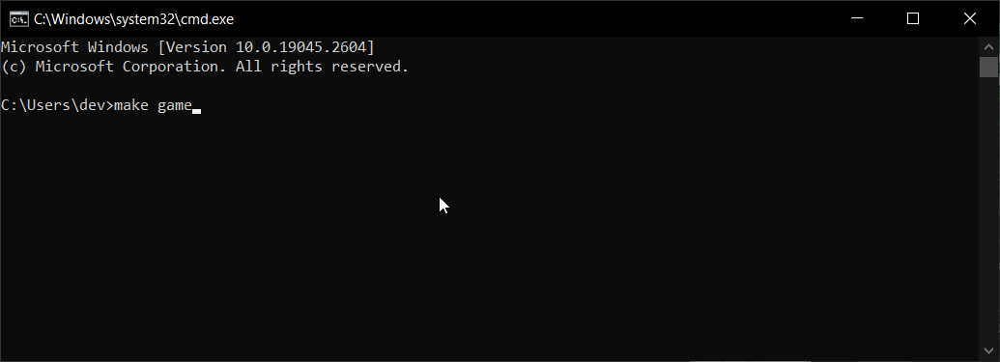

Devlog
Today I started a new project - the same game I’ve been working on for a while.
Perhaps unconsciously, I believed that starting a fresh project would inspire some motivation and optimism. However, I have fallen into the same trap. I found myself once again fine-tuning basic actions instead of focusing on the bigger picture.
It’s easy to get caught up in the thrill of quick bursts of dopamine from making minor improvements, but this doesn’t bring me any closer to actually releasing the game.
To avoid making the same mistakes, I should have a core progression loop that can be implemented in just a few hours. Once I have that, I can focus on actions feedback, adding content, and polishing the game.
For now, I will focus on creating a functional console application before moving on to Unity. This approach will help me stay focused on the essential elements of the game and avoid getting sidetracked.

I briefly considered making the game 3D, I will put that idea on hold for now since the game doesn’t rely on advanced graphics. I can always revisit that later if it makes sense for the game.
To stay on track and make the most of my working sessions, I’ve identified two key strategies:
-
Define a clear outcome for each work session. Before starting, I will decide what I want to accomplish in that particular session, so I stay focused on my goal and avoid getting sidetracked.
-
Stick to a console application until the core progression loop is complete. I’ll keep the game simple and functional until the basic gameplay is fully developed, so I can ensure a solid foundation for the more complex features.
To monitor my progress and learn from any missteps, I’ll keep a devlog with the most recent entries at the bottom. This will help me review my progress and stay motivated as I work towards my goals.